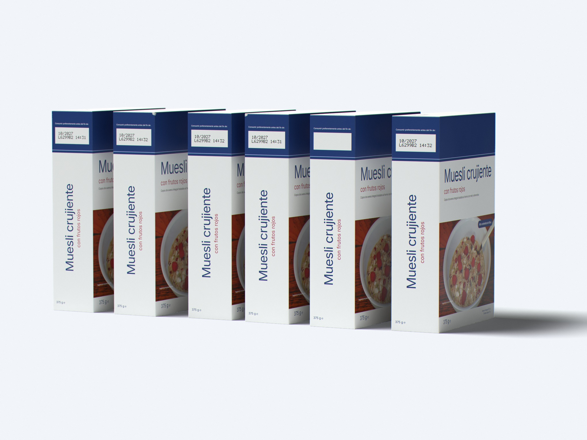

Especificaciones técnicas
Lectura, comunicación y tamaños mínimos
Lectura de impresión variable entre 120 y 500 piezas por minuto, según el número de campos.
Lectura y comunicación
| Campos OCR | Número ilimitado |
|---|---|
| Códigos 1D y 2D | Número ilimitado de campos de lectura 1D o 2D (Data Matrix) |
| Motivos | Detección de motivos fijos impresos |
| Protocolos | TCP/IP, EtherNet/IP, Modbus, Profibus, RS-232, señales digitales |
Tamaño mínimo de lectura
| Campo de visión (mm) | Código 1D (mm) | Código 2D (mm) | Altura del texto OCR (mm) |
|---|---|---|---|
| 100 × 56 | 0,15 | 0,31 | 2,0 |
| 75 × 42 | 0,11 | 0,23 | 1,5 |
| 50 × 28 | 0,08 | 0,16 | 1,0 |
